| 日付 | 2017年2月26日（日） |
|---|---|
| 山域 | 箱根 |
| メンバー | 家族（妻、長女・5歳、長男・3歳） |
| 山行形態 | 子連れ日帰り |
| アクセス | 車 |
| ルート (Map) | 駐車場 (8:22) - (8:36) 幕山公園 - (10:06) 幕山 (10:50) - (11:05) 分岐点 - (11:36) 車道 - (12:02) 幕山公園 (12:50) - (12:59) アスレチック (13:18) - (13:27) 駐車場 |
前回の山行では雪が多く苦労したので、今回は南の山に行くことにする。
と言っても、行ける山の選択肢はさほど多くはなく、
3年振り4度目の幕山に行くことにする。
ちょうど梅の花が咲く季節なので、花見ついでの山登りだ。
幕山近くの駐車場は観光客用でまだオープンしていない。
登山客は少し離れた駐車場に車を停めることになる。
その分駐車料金は少し安めだ。
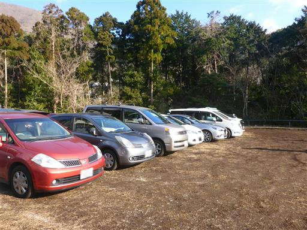
幕山公園まで500m程度の車道を歩く。
他にも歩いている登山客がたくさん見られる。
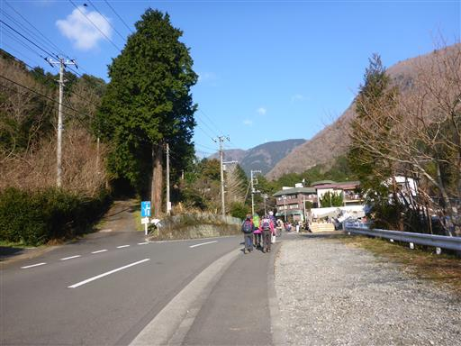
橋を渡ると幕山の梅林が見えてくる。
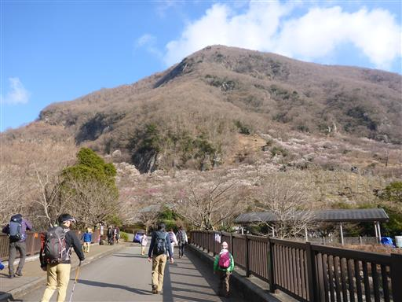
ちょうど満開に近い時期で、様々な色の梅が咲き誇っている。
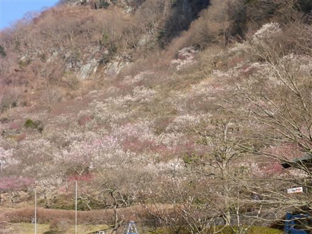
まだ観光客の少ない静かな梅林を眺める。
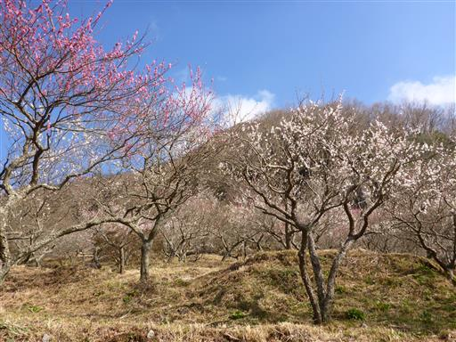
間近で眺めてみる。この梅は花びらがたくさんついている。
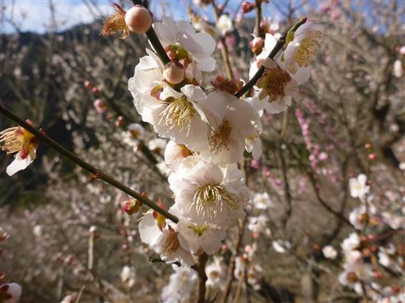
梅林の階段を登っていくと、次第に道は登山道っぽくなってくる。
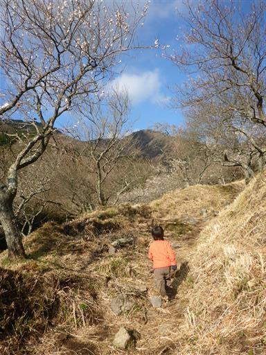
今日も姉弟で手をつないで登っている。
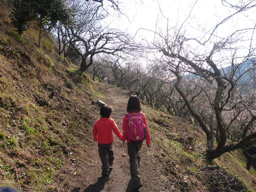
ロッククライミングの練習場。いつ来ても練習している人が見られる人気の岩場だ。
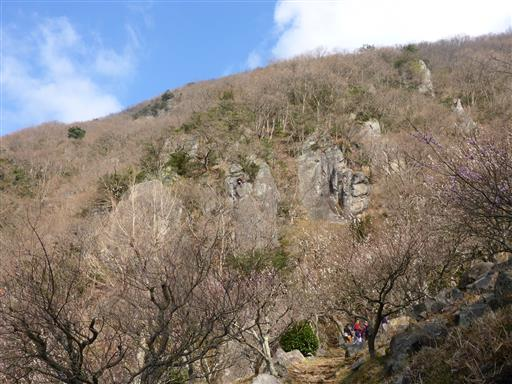
高台から梅林を見下ろす。見下ろした梅林もまたきれいだ。
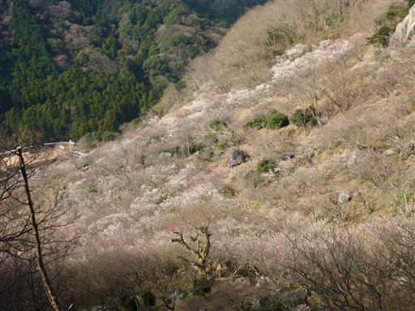
腐った木の枝を拾って中を突っつくと、中身がボロボロと崩れ落ちてしまった。
子供たちはのぞき込んだり、指を突っ込んだりして遊んでいる。
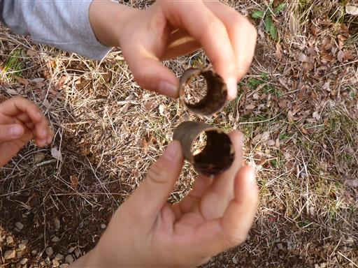
東日本大震災で落石したらしい。
2年前に来たときからあったはずだが、その時は気づかなかった。
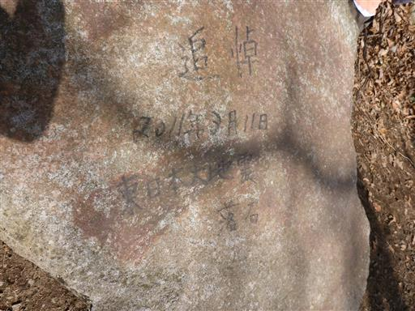
相模湾と真鶴半島が眼下に見えてきた。
今日は天気は悪くないのだが霞がひどく、青い海は見えない。
前回来た時は伊豆大島まで見えたのだが…
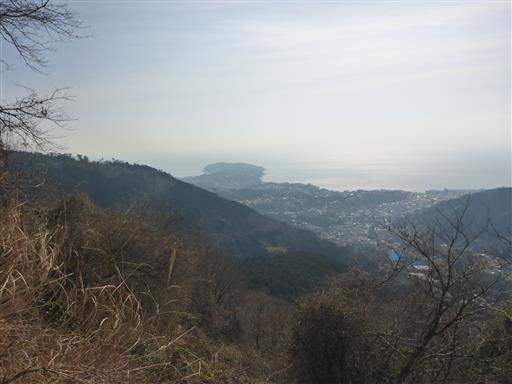
山頂直下まで来ると、息子が疲れたとぐずりだす。
娘は3歳の時に幕山～南郷山まで歩いているのだが、息子はそこまでの気力がないようだ。
体力はほとんど使っていないと思うのだが…
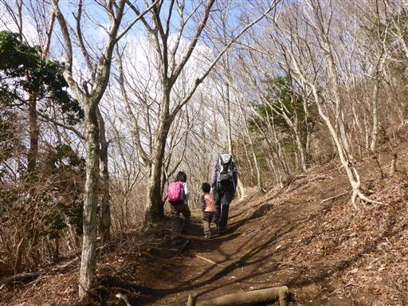
幕山山頂に到着する。標高625m。
山頂はそこそこ賑わっている。
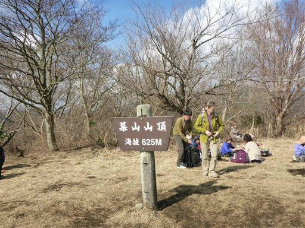
息子は拾った棒で遊んでいる。ここで昼食休憩をとる。

下山は裏側に通じる別ルートをとる。
あちらこちらでイノシシが掘り返したような穴が見られる。
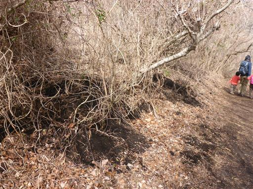
分岐点に到着。右に行けば南郷山、左に行けば幕山公園に戻れる。
前回は南郷山経由で下山したが、今回は左の道をとる。
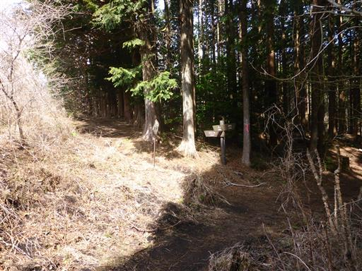
道は泥んこで歩きにくい。ここの道はいつ来ても状態が悪い。

笹薮が続く。
5年前に来た時は、雪の重みで登山道に覆いかぶさった笹に苦労した。
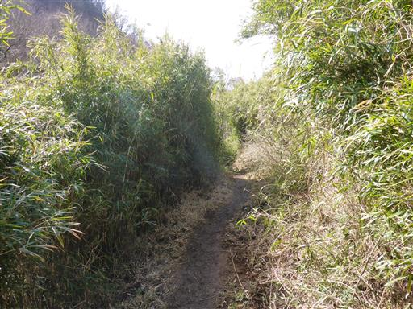
息子は長い笹の茎を見つけて振り回している。
長いのでかなり危ない…
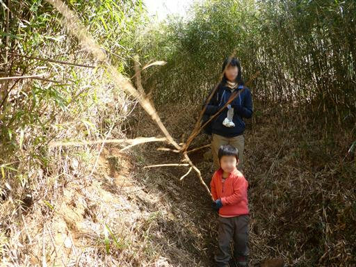
ヤマルリソウの花が一輪だけ咲いている。
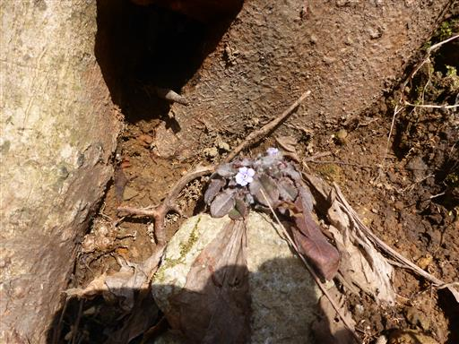
息子は途中から走り出す。こうなるとなかなか追いつけない。
まだまだ元気いっぱいだ。
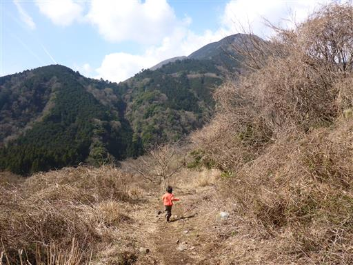
下山して車道に出てくる。車道をしばらく歩くと幕山公園だ。
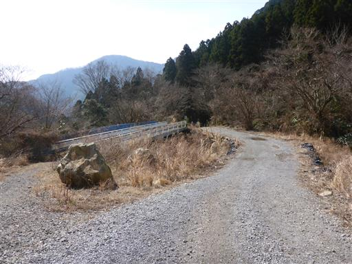
山の神に到着。
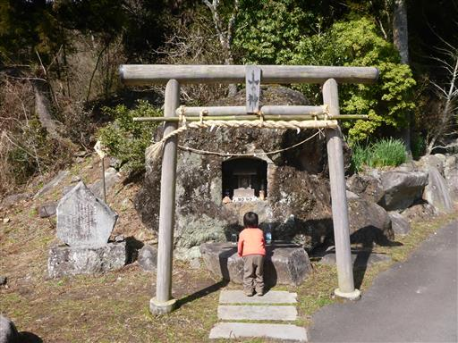
道端にはオオイヌノフグリがたくさん咲いている。ようやく春がやってきた。
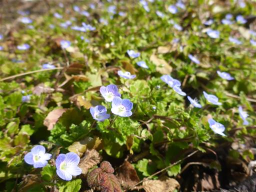
再び梅の花が見えてきた。
幕山公園中心部からは少し離れているので、この辺りはまだ人が少ない。
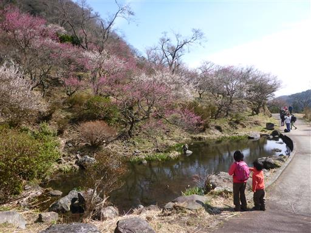
池には鯉がたくさん住んでいる。
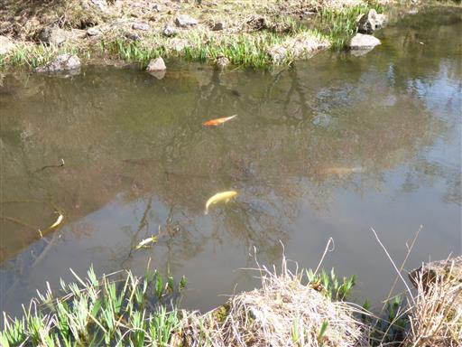
道の傍を流れる川で少し遊ぶことにする。子供たちは、川に石を投げたり、
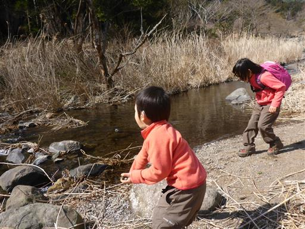
茎を引っ張ったり、

魚釣り（？）をしたり、して適当に遊んでいる。
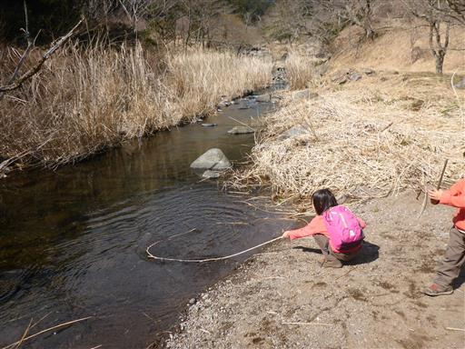
しばらく遊んだら幕山公園に戻ってくる。
たくさんの店が軒を連ねている。ここできび餅を買って食べる。
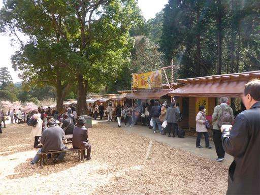
公園内は観光客でいっぱいだ。
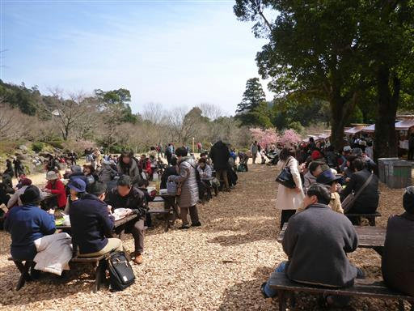
幕山公園と駐車場の間にあるアスレチックで遊んでから帰ることにする。
行くときから子供たちの目に入っていて、帰りに遊ぶと約束していた。
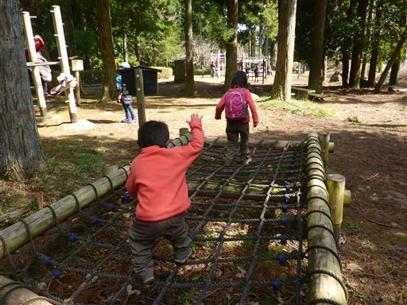
ジャングルジムのような遊具。
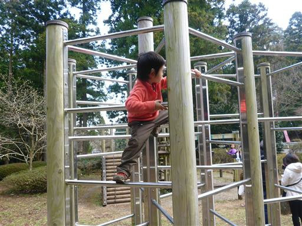
ロープを使って上のネットまで登る。
全般的に難しいアスレチックはなく、数もあまり多くない。
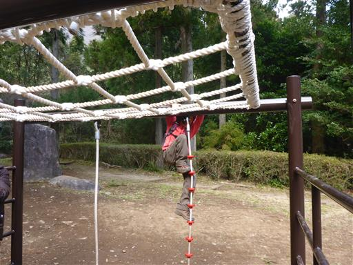
しばらく遊んだら駐車場に戻る。
この時間になっても幕山に向かう車が長蛇の列を作っている。
歩行時間は短かったが、梅を堪能できた一日だった。
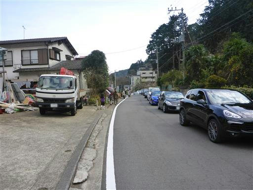